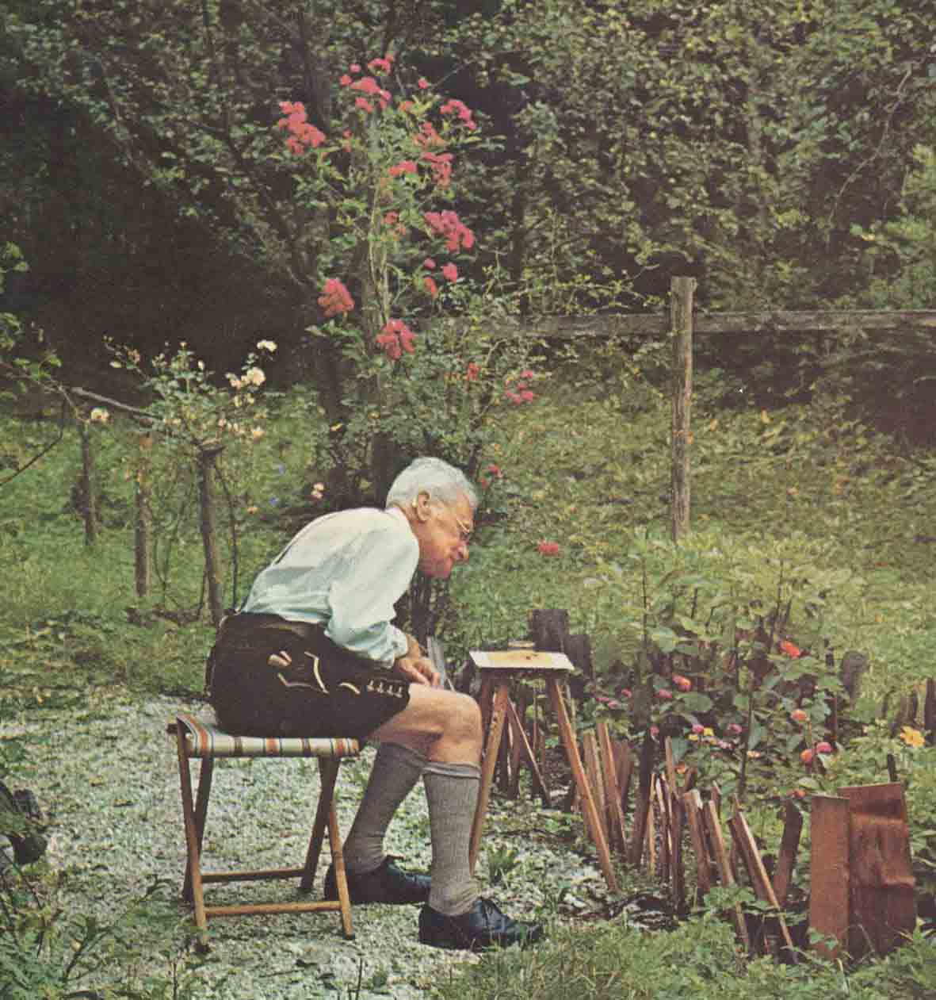
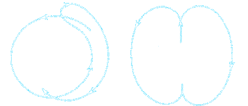

a faster swarm
@wolframhempel | deepstream.io
Class A
- higher-order patterns
- multi role / multi signal
- feedback loop up to hours
Class B
- low-level patterns
- fast response times
- feedback loop < 1 second
Ants
Paris, Rome, London
Paris, Rome, London, Berlin
Travelling Salesman Problem
36
424
5120
6720
75040
840320
9362880
103628800
1139916800
12479001600

#ows
Class B
Boids (bird-oid objects)
Craig Reynolds, 1986
Bees

